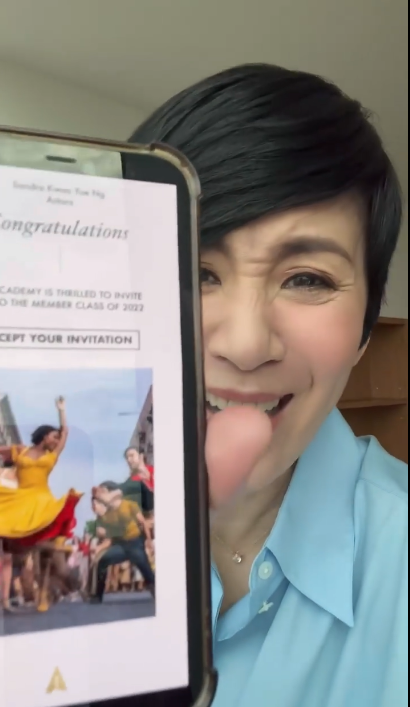

2022年06月30日 14:56 新浪娱乐
奥斯卡主办方美国电影艺术与科学学院2022年“招新”名单出炉，演员吴君如受邀。
吴君如发布视频回应成为奥斯卡评委
新浪娱乐讯 奥斯卡主办方美国电影艺术与科学学院2022年“招新”名单出炉，共397人受邀成为学院成员，其中包括3名中国香港电影从业者，分别为吴君如以及幕后电影人许月珍（《少年的你》）和徐宽。同时成为新会员的还有《后翼弃兵》女主角安雅·泰勒-乔伊、西岛秀俊、Billie Eilish等人。
对此吴君如也发布视频回应，难掩激动心情，表示：“早晨看到Academy 给我寄来的邮件，说恭喜我成为他们的会员。OMG，OMG到把我老公（陈可辛）都吵醒了！我终于可以打入好莱坞权力核心，我以后是不是和汤姆·克鲁斯、梅丽尔·斯特里普同排了呀？”